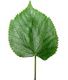

leaf

Definition: A leaf is a principal appendage of the stem of a vascular plant, usually borne laterally aboveground and specialized for photosynthesis. Leaves are collectively called foliage, as in "autumn foliage", while the leaves, stem, flower, and fruit collectively form the shoot system. In most leaves, the primary photosynthetic tissue is the palisade mesophyll and is located on the upper side of the blade or lamina of the leaf but in some species, including the mature foliage of Eucalyptus, palisade mesophyll is present on both sides and the leaves are said to be isobilateral. Most leaves are flattened and have distinct upper (adaxial) and lower (abaxial) surfaces that differ in color, hairiness, the number of stomata (pores that intake and output gases), the amount and structure of epicuticular wax and other features. Leaves are mostly green in color due to the presence of a compound called chlorophyll that is essential for photosynthesis as it absorbs light energy from the sun. A leaf with lighter-colored or white patches or edges is called a variegated leaf.
Source: Wikipedia
Wikipedia Page
Wikidata Page